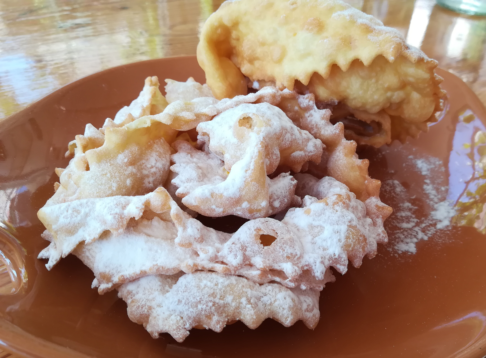

Krostuli

Description
Krostuli are aother traditional Istrian recipe usially made for special occasions. This simple yet tasty dish will make your day!
Ingredients
- Flour
- Sugar
- Eggs
- White wine
- Butter
- Water
- Salt
Steps
- Mix all the ingredients together
- Roll your dough in a thin sheet
- Cut stripes
- Fold the stripes
- Bake
- Sprinke powdered sugar